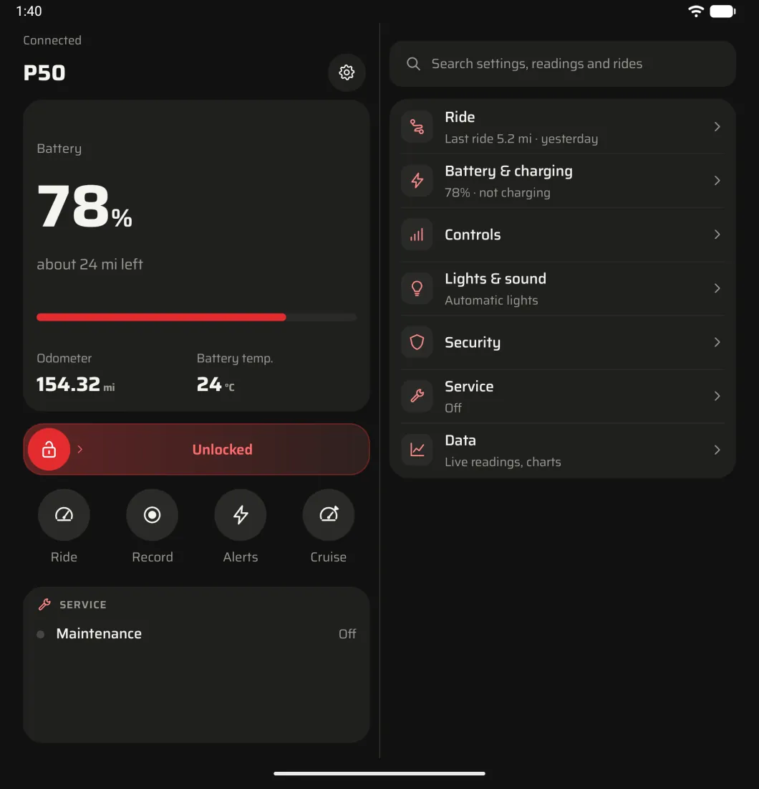
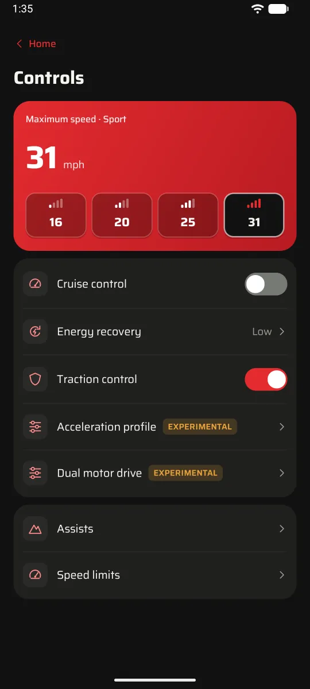
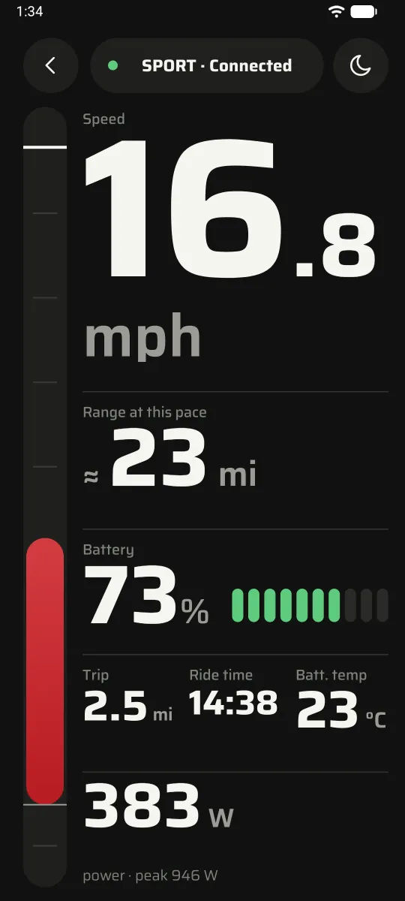

Your scooter, no cloud.
Volt is an independent, open source Android app for NAVEE electric scooters. Lock, ride, record and change settings over Bluetooth, with no account. Works offline.
Volt @VERSION@ · Android 8.0+ · Free · No account
One Home that follows the moment.
New installs start on Clean Home. Its top area changes with what you're doing, at one fixed height, so the Lock bar and the four quick actions stay exactly where your thumb expects them.
-
Parked
Battery level, range left, odometer and drive mode. Slide the Lock bar to lock or unlock, and start a ride or a recording from the round buttons under it.
-
Charging
Plug in and the charging view comes up by itself: the level against your charge limit, charging power and an estimated time to full. A live card follows you to the lock screen.
-
Just back
For about an hour after a ride: its distance, ride time, average speed and battery used, and its route when you recorded with location on. Tap it to open the ride.
Everything else, one tap from Home.
Under the quick actions sit your scooter's seven subjects, each with a live line about where it stands. Settings live behind the gear, and one search finds any page, setting, reading or ride.
RideRiding mode, recording, all rides
A full-screen riding mode with big speed, range at this pace and power, in three layouts you can edit, with night vision after sunset. Recordings can keep a GPS route, phone sensors and energy readings, and you can compare two rides.
Battery & chargingRange, charging estimates, history
Optional range learned from your own rides, charging estimates, a live charging card on the lock screen and your charge history. Usable ride energy is experimental and labelled that way.
ControlsRiding modes, cruise, assists
The riding settings your model supports, such as cruise control and assists. Volt stays within the speed limits the scooter's firmware and the official app allow, never changes firmware, and marks experimental controls.
Lights & soundTail light, automatic lights, line and star lights
Where your model has them: the tail light, automatic lights, the turn-signal sound, and line and star light patterns and colours.
SecurityLock, handlebar PIN, proximity unlock
Lock and unlock from the Lock bar. Where your model has them, the handlebar PIN and proximity unlock settings live here too.
ServiceMaintenance reminders, diagnostics
Distance and time reminders, with a quiet notification when a check is due. Also a compatibility test, diagnostics and issue reports.
DataLive readings, charts
Searchable readings with charts, favourites and last-seen values. Export rides, or make an encrypted backup of what you choose, from rides alone to your whole setup.
Rather arrange it yourself? Switch Home style to Widgets: a dashboard of movable, resizable widgets with saved layouts for folded and unfolded screens.
Folded, unfolded, day or night.
Unfolded, Home and a page share the screen; folded, they take turns. Every screen comes in dark and light, and riding mode adds night vision after sunset.



Screens show sample data
Made for NAVEE scooters.
Volt recognises every NAVEE scooter by its Model ID. Features vary by model and firmware.
- Tested on hardware
- UT5 MAXUS
- Verified
- Your phone
- Android8.0+
- With Bluetooth LE. Foldables included.
A few other models have some checks reported by owners and testers (N65i, GT5 Max, ST3 Pro). Their other controls, and every other model's, follow the official app's list and are still being verified.
Set up once, then ride.
You'll need:
- Android 8.0+ with Bluetooth LE
- A NAVEE scooter
- To pair one already in your NAVEE account: the NAVEE app, signed in, plus a computer with USB or Shizuku on Android 11+
- InstallDownload the APK and open it on your phone. Releases
- Pair onceVolt helps you copy your scooter's key from NAVEE. No password needed. A new or reset scooter can skip this: Volt makes a new owner key and keeps it on your phone. Setup helper
- RideClose NAVEE and connect in Volt. No computer needed after setup.
Nothing leaves your phone.*
* Except two opt-in extras: map backgrounds (the map provider sees your IP address and the area you view) and update checks (GitHub sees your IP address and Volt version).
Questions
More in the GitHub repository.
Is Volt made by NAVEE?
No. Volt is an independent project and isn't affiliated with NAVEE or its app vendor.
Which scooters does it work with?
NAVEE scooters. The US UT5 MAX is tested on hardware; other mapped models are still being verified. Features vary by model and firmware.
Does Volt need the internet?
No. Controls, readings and ride recording work offline. Map backgrounds and update checks go online only when you ask.
Can I keep the dashboard I arranged?
Yes. Owners updating from an earlier Volt keep Widgets, and switching Home style keeps your widget layout either way.
Which languages does Volt speak?
English, plus Spanish, Portuguese (Portugal and Brazil), Swedish, German, French, Italian, Dutch, Turkish and Polish, all in beta. Volt follows your phone's language; on Android 13+, Settings › Language switches it back to English.
Is there an iPhone version?
Not right now. Volt is Android only.
Where is my data stored?
On your phone. Export rides or make a password-protected backup anytime.